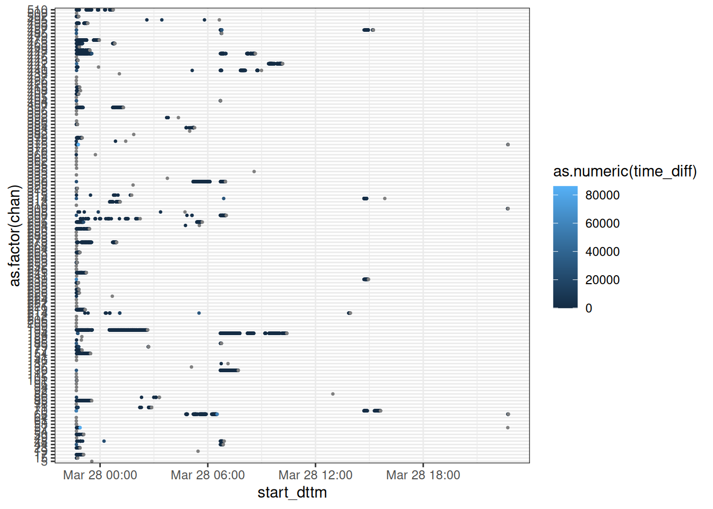
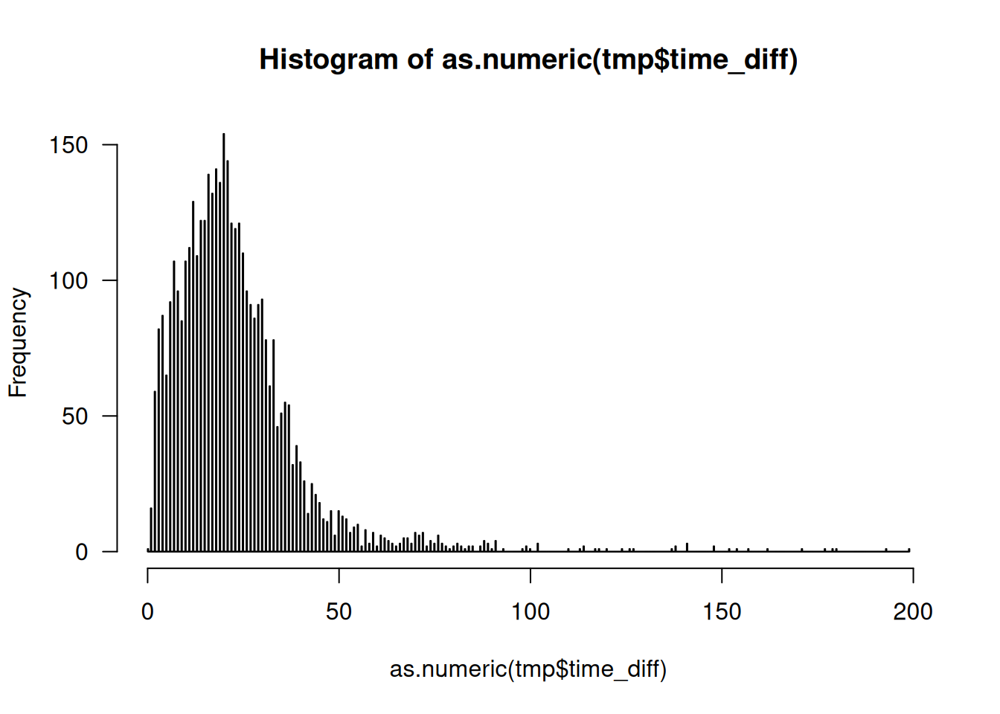
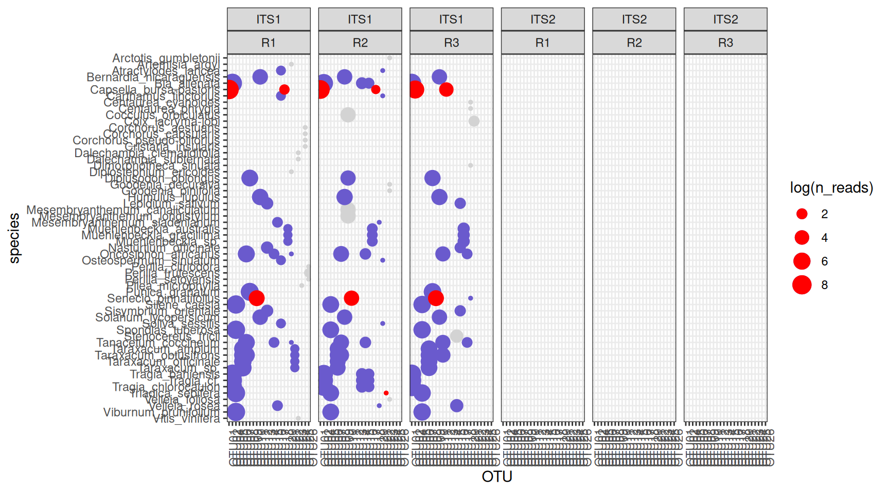

── Attaching core tidyverse packages ──────────────────────── tidyverse 2.0.0 ──
✔ dplyr 1.1.4 ✔ readr 2.1.5
✔ forcats 1.0.0 ✔ stringr 1.5.1
✔ lubridate 1.9.4 ✔ tibble 3.2.1
✔ purrr 1.0.2 ✔ tidyr 1.3.1
── Conflicts ────────────────────────────────────────── tidyverse_conflicts() ──
✖ dplyr::filter() masks stats::filter()
✖ dplyr::lag() masks stats::lag()
ℹ Use the conflicted package (<http://conflicted.r-lib.org/>) to force all conflicts to become errors
Attaching package: 'EDAWR'
The following object is masked from 'package:dplyr':
storms
The following objects are masked from 'package:tidyr':
population, who
here() starts at /home/rstudio/raukr
Loading required package: BiocGenerics
Attaching package: 'BiocGenerics'
The following objects are masked from 'package:lubridate':
intersect, setdiff, union
The following objects are masked from 'package:dplyr':
combine, intersect, setdiff, union
The following objects are masked from 'package:stats':
IQR, mad, sd, var, xtabs
The following objects are masked from 'package:base':
anyDuplicated, aperm, append, as.data.frame, basename, cbind,
colnames, dirname, do.call, duplicated, eval, evalq, Filter, Find,
get, grep, grepl, intersect, is.unsorted, lapply, Map, mapply,
match, mget, order, paste, pmax, pmax.int, pmin, pmin.int,
Position, rank, rbind, Reduce, rownames, sapply, saveRDS, setdiff,
table, tapply, union, unique, unsplit, which.max, which.min
Loading required package: BiocParallel
Loading required package: Biostrings
Loading required package: S4Vectors
Loading required package: stats4
Attaching package: 'S4Vectors'
The following objects are masked from 'package:lubridate':
second, second<-
The following objects are masked from 'package:dplyr':
first, rename
The following object is masked from 'package:tidyr':
expand
The following object is masked from 'package:utils':
findMatches
The following objects are masked from 'package:base':
expand.grid, I, unname
Loading required package: IRanges
Attaching package: 'IRanges'
The following object is masked from 'package:lubridate':
%within%
The following objects are masked from 'package:dplyr':
collapse, desc, slice
The following object is masked from 'package:purrr':
reduce
Loading required package: XVector
Attaching package: 'XVector'
The following object is masked from 'package:purrr':
compact
Loading required package: GenomeInfoDb
Attaching package: 'Biostrings'
The following object is masked from 'package:base':
strsplit
Loading required package: Rsamtools
Loading required package: GenomicRanges
Loading required package: GenomicAlignments
Loading required package: SummarizedExperiment
Loading required package: MatrixGenerics
Loading required package: matrixStats
Attaching package: 'matrixStats'
The following object is masked from 'package:dplyr':
count
Attaching package: 'MatrixGenerics'
The following objects are masked from 'package:matrixStats':
colAlls, colAnyNAs, colAnys, colAvgsPerRowSet, colCollapse,
colCounts, colCummaxs, colCummins, colCumprods, colCumsums,
colDiffs, colIQRDiffs, colIQRs, colLogSumExps, colMadDiffs,
colMads, colMaxs, colMeans2, colMedians, colMins, colOrderStats,
colProds, colQuantiles, colRanges, colRanks, colSdDiffs, colSds,
colSums2, colTabulates, colVarDiffs, colVars, colWeightedMads,
colWeightedMeans, colWeightedMedians, colWeightedSds,
colWeightedVars, rowAlls, rowAnyNAs, rowAnys, rowAvgsPerColSet,
rowCollapse, rowCounts, rowCummaxs, rowCummins, rowCumprods,
rowCumsums, rowDiffs, rowIQRDiffs, rowIQRs, rowLogSumExps,
rowMadDiffs, rowMads, rowMaxs, rowMeans2, rowMedians, rowMins,
rowOrderStats, rowProds, rowQuantiles, rowRanges, rowRanks,
rowSdDiffs, rowSds, rowSums2, rowTabulates, rowVarDiffs, rowVars,
rowWeightedMads, rowWeightedMeans, rowWeightedMedians,
rowWeightedSds, rowWeightedVars
Loading required package: Biobase
Welcome to Bioconductor
Vignettes contain introductory material; view with
'browseVignettes()'. To cite Bioconductor, see
'citation("Biobase")', and for packages 'citation("pkgname")'.
Attaching package: 'Biobase'
The following object is masked from 'package:MatrixGenerics':
rowMedians
The following objects are masked from 'package:matrixStats':
anyMissing, rowMedians
Attaching package: 'GenomicAlignments'
The following object is masked from 'package:dplyr':
last
Attaching package: 'ShortRead'
The following object is masked from 'package:dplyr':
id
The following object is masked from 'package:purrr':
compose
The following object is masked from 'package:tibble':
viewTidy work in Tidyverse
Tidyverse, tidy work and the modern R paradigm.
Note
Welcome to the hands-on workshop “Tidy Work in Tidyverse”. Most of the functions necessary to complete the tutorials and challenges were covered in the lecture. However, sometimes the tasks require that you check the docs or search online. Our solutions are not the only possible ones! Let us know if you can do better or solve things in a different way!
If stuck, look at hints, next do some google searches and, if still stuck, turn to a TA.
It is a lot of material, we know! Do not feel bad if you do not solve all the tasks. If you completed Challenge 3, you have used all the most important features of tidyverse! Good luck!
General exercises
Datasets are available here.
Pipes
Chunk 1
Rewrite the following code chunks as pipes (Load package magrittr because tidyverse supports only the %>% pipe!):
my_cars <- mtcars[, c(1:4, 10)]
my_cars <- my_cars[my_cars$disp > mean(my_cars$disp), ]
my_cars <- colMeans(my_cars)This is our solution:
Code
mtcars %>%
select(c(1:4, 10)) %>%
filter(disp > mean(disp)) %>%
colMeans() -> my_carsWhat is wrong with our solution?
Tip
- It is better to have the result assigned on the left hand side: result <- expression. In this case the expression is the whole pipe.
- Our ‘expression -> result’ is correct but can easily be missed when reading the code.
Chunk 2
The summary(x) function is a bit special: when you type summary(x) in the console, print is called in an implicit way. Pipe call does not do such implicite call, so you will have to invoke print in an explicit way. But the %T>% does unbranch for one call only, you will have to make printing of the summary a one single composed call using {}. Try to wrap your mind around this. If in doubt, turn to a TA.
summary(cars)
colSums(cars)Code
cars %T>% {print(summary(.))} %>% colSums()Chunk 3
Rewrite the following correlations using pipes.
cor(mtcars$gear, mtcars$mpg)Code
mtcars %$% cor(gear, mpg)cor(mtcars)Code
mtcars %>% cor()Chunk 4
Given is the dim_summary(nrows, ncols) function which takes nrows and ncols as arguments and prints this info:
dim_summary <- function(nrows, ncols) {
print(
paste0('Matrix M has: ', nrows, ' rows and ', ncols, ' columns.')
)
}Rewrite each of the code chunks below using pipes:
distr1 <- rnorm(16)
M <- matrix(distr1, ncol = 4)
plot(M)
M <- M + sample(M)
dim_summary(nrows = nrow(M), ncols = ncol(M))distr2 <- rnorm(16)
N <- matrix(distr2, ncol = 4)
colnames(N) <- (letters[1:4])
summary(N)
N <- N + 0P <- M %x% t(N)
heatmap(P)
colnames(P) <- letters[1:dim(P)[2]]
cor(P[ ,'a'], P[ ,'i'])
Tip
Beware of a class of functions, called replacement functions. These beasts are of the form: function(arguments) <- value and rownames(x) <- c('a', 'b', 'c') is a good example of such beast. When writing pipes, we have bear in mind that whole function <- is the name of the replacement function and thus we have to use it as such in the pipe enquoted using backticks. Yes, we know… but you wont see this too often.
Tip
Sometimes, it may not be possible to put everything into one single pipe and the results of running two or more pipes have to be used in the final pipe.
Code
dim_summary <- function(nrows, ncols) {
print(paste0('Matrix M has: ', nrows, ' rows and ', ncols, ' columns.'))
}
M <- rnorm(16) %>%
matrix(ncol = 4) %T>%
plot() %>%
`+`(., sample(.)) %T>%
{dim_summary(nrow(.), ncol(.))}
N <- rnorm(16) %>%
matrix(ncol = 4) %>%
`colnames<-`(letters[1:4]) %T>%
summary() %>% `+`(., 0)
P <- M %>%
`%x%`(., t(N)) %T>%
heatmap() %>%
`colnames<-`(letters[1:dim(.)[2]]) %>%
as_data_frame() %$%
cor(a, i)Tibbles
Task 1
- Convert the
mtcarsdataset to a tibblevehicles. - Select the number of cylinders (
cyl) variable using:- the
[[index]]accessor, - the
[[string]]accessor, - the
$accessor.
- the
- Do the same selection as above, but using pipe and placeholders (use all three ways of accessing a variable).
- Print the tibble.
- Print the 30 first rows of the tibble.
- Change the default behavior of printing a tibble so that at least 15 and at most 30 rows are printed.
- What is the difference between the
tibble.print_maxanddplyr.print_min? Is there any? Test it. - Convert
vehiclesback to adata.framecalledautomobiles.
Code
# 1
vehicles <- mtcars %>% as_tibble()
# 2
vehicles[['cyl']]
vehicles[[2]]
vehicles$cyl
# 3
vehicles %T>%
{print(.[['cyl']])} %T>%
{print(.[[2]])} %>%
.$cyl
# 4
vehicles
# 5
vehicles %>% head(n = 30)
# 6
options(tibble.print_min = 15, tibble.print_max = 30)
# 7
# In theory there should be no difference. dplyr imports tibble from the tibble package
# and dplyr.width, dplyr.print_min and dplyr.print_min are passed down to the tibble.
# But test both behaviours. First with only the tibble package loaded, later with dplyr # loaded.
# 8
automobiles <- as.data.frame(vehicles)Task 2
Create the following tibble using tribble():
# A tibble: 4 × 3
id event date
<dbl> <chr> <chr>
1 1 success 24-04-2017
2 2 failed 25-04-2017
3 3 failed 25-04-2017
4 4 success 27-04-2017Code
tab <- tribble(
~id, ~event, ~date,
1, 'success', '24-04-2017',
2, 'failed', '25-04-2017',
3, 'failed', '25-04-2017',
4, 'success', '27-04-2017'
)Task 3
Compare the performance of as.data.frame(), as_data_frame() and as_tibble() on a 100 x 30 matrix filled with some random integers. Use package microbenchmark. Fill in your result here in the Tidyverse Lab sheet, Tibbles – performance.
Code
tst <- replicate(30, sample(100), simplify = TRUE)
colnames(tst) = paste0(rep('col', times = dim(tst)[2]), 1:dim(tst)[2])
microbenchmark::microbenchmark(
as.data.frame(tst),
as_data_frame(tst),
as_tibble(tst)
)Task 4
Do you think tibbles are lazy? Try to create a tibble that tests whether lazy evaluation applies to tibbles too.
Code
tibble(x = sample(1:10, size = 10, replace = T), y = log10(x))Parsing
Parse the following vectors using parse_ functions:
vec1 <- c(1, 7.2, 3.84, -5.23)– parse it asdouble(any problems? why?).- Now, parse the same vector
c(1, 7.2, 3.84, -5.23)asinteger. What happens? - Can you still parse it as
integersomehow? - Parse as double
vec2 <- c('2', '3,45', '?', '-7,28') - Parse correctly
vec3 <- c('2', '3,45', '?', '-7.28') - Parse the following guessing the parser:
vec4 <- c('barrel: 432.7$', 'liter: 15.42PLN', 'gallon costs approx 32.1SEK', 'sunny, wind gusts up till 55m/s') - Can you parse
vec4as number? Do it if you can. - Parse
vec5 <- "25 Dec 2015"as date (hint:?parse_date()). - Parse
10_Jul_1410as date.
Code
vec1 <- c(1, 7.2, 3.84, -5.23)
vec2 <- c('2', '3,45', '?', '-7,28')
vec3 <- c('2', '3,45', '?', '-7.28')
vec4 <- c('barrel: 432.7$', 'liter: 15.42PLN', 'gallon costs approx 32.1SEK', 'sunny, wind gusts up till 55m/s')
vec5 <- "25 Dec 2015"
parse_double(vec1)
parse_integer(vec1)
parse_integer(as.integer(vec1)) # Is it the best way? Hint: rounding.
parse_double(vec2, na = '?', locale = locale(decimal_mark = ','))
parse_number(vec3, na = '?', locale = locale(decimal_mark = '.'))
guess_parser(vec4)
parse_guess(vec4)
# Yes, you can:
parse_number(vec4)
parse_date(vec5, format="%d %b %Y")
parse_date("10_Jul_1410", format="%d%.%b%.%Y")NYC flights Challenge
The nycflights13 package contains information about all flights that departed from NYC (i.e., EWR, JFK and LGA) in 2013: 336,776 flights with 16 variables. To help understand what causes delays, it also includes a number of other useful datasets: weather, planes, airports, airlines. We will use it to train working with tibbles and dplyr.
Task 1: Selecting column
- Load the
nycflights13package (install if necessary). - Read about the data in the package docs.
- Inspect the
flightstibble. - Select all columns but
carrierandarr_time. - Select
carrier,tailnumandorigin. - Hide columns from
daythroughcarrier. - Select all columns that have to do with
arrival (hint:?tidyselect). - Select columns based on a vector
v <- c("arr_time", "sched_arr_time", "arr_delay"). - Rename column
desttodestinationusing:select()andrename()
What is the difference between the two approaches?
Code
install.packages('nycflights13')
library('nycflights13')
?nycflights13
flights
flights %>% select(-carrier, -arr_time)
flights %>% select(carrier, tailnum, origin)
flights %>% select(-(day:carrier))
flights %>% select(contains('arr_')) # or
v <- c("arr_time", "sched_arr_time", "arr_delay")
flights %>% select(v) # ambiguous, or better
flights %>% select(all_of(v))
flights %>% select(destination = dest)
flights %>% rename(destination = dest)
# select keeps only the renamed column while rename returns the whole dataset
# with the column renamed.Task 2: Filtering rows
- Filter only the flights that arrived ahead of schedule.
Code
flights %>% filter(arr_delay < 0)- Filter the flights that had departure delay between 10 and 33.
Code
flights %>% filter(dep_delay >= 10, dep_delay <= 33) # or
flights %>% filter(between(dep_delay, 10, 33))- Fish out all flights with unknown arrival time.
Code
flights %>% filter(is.na(arr_time))- Retrieve rows 1234:1258 (hint:
?slice).
Code
flights %>% slice(1234:1258)- Sample (
?sample_n()) 3 random flights per day in March.
Code
nycflights13::flights %>% filter(month == 3) %>%
group_by(day) %>%
slice_sample(n = 3)- Show 5 most departure-delayed flights in January per carrier.
Code
nycflights13::flights %>%
filter(month == 1) %>%
group_by(carrier) %>%
slice_max(dep_delay, n = 5)- Retrieve all
unique()routes and sort them by destination.
Code
nycflights13::flights %>%
select(origin, dest) %>%
unique() %>%
arrange(dest)
nycflights13::flights %>%
mutate(route = paste(origin, dest, sep="-")) %>%
select(route) %>%
unique()- Retrieve all
distinct()routes and sort them by destination.
Code
nycflights13::flights %>%
select(origin, dest) %>%
distinct() %>%
arrange(dest)
# or
flights %>%
mutate(route = paste(origin, dest, sep="-")) %>%
distinct(route)- Is
unique()more efficient thandistinct()?
Code
microbenchmark::microbenchmark(
unique = nycflights13::flights %>%
select(origin, dest) %>%
unique() %>%
arrange(dest),
distinct = nycflights13::flights %>%
distinct(origin, dest) %>%
arrange(dest),
times = 10L
)
# Distinct is faster.Task 3: Trans(mutations)
air_timeis the amount of time in minutes spent in the air. Add a new columnair_spdthat will contain aircraft’s airspeed in mph.- As above, but keep only the new
air_spdvariable. - Use
rownames_to_column()onmtcarsto add car model as an extra column.
Code
flights %>% mutate(air_spd = distance/(air_time / 60))
flights %>% transmute(air_spd = distance/(air_time / 60))
mtcars %>% rownames_to_column('model')Task 4: Groups and counts
- Use
group_by(),summarise()andn()to see how many planes were delayed (departure) every month.
Code
flights %>%
filter(dep_delay > 0) %>%
group_by(month) %>%
summarise(num_dep_delayed = n())- Do the same but using
tally()andcount().
Code
flights %>%
filter(dep_delay > 0) %>%
group_by(month) %>%
tally()
flights %>%
filter(dep_delay > 0) %>%
count(month)- What was the mean
dep_delayper month?
Code
flights %>%
group_by(month) %>%
summarise(mean_dep_delay = mean(dep_delay, na.rm = T))- Count the number of incoming delayed flights from each unique origin and sort origins by this count (descending).
Code
flights %>%
filter(arr_delay > 0) %>%
group_by(origin) %>%
summarise(cnt = n()) %>%
arrange(desc(cnt))- Do the same using
tally()
Code
flights %>%
filter(arr_delay > 0) %>%
group_by(origin) %>%
tally(sort = T)- Use
summarise()to sum totaldep_delayper month in hours.
Code
flights %>%
group_by(month) %>%
summarize(tot_dep_delay = sum(dep_delay/60, na.rm = T))- Use the
wtparameter ofcount()(works withtally()too) to achieve the same.
Code
flights %>%
group_by(month) %>%
count(wt = dep_delay/60)- Run
group_size()oncarrierwhat does it return?
Code
flights %>%
group_by(carrier) %>%
group_size()- Use
n_groups()to check the number of unique origin-carrier pairs.
Code
flights %>%
group_by(carrier) %>%
n_groups()
Note on
ungroup
Depending on the version of dplyr, you may or may need to use the ungroup() if you want to group your data on some other variables. In the newer versions, summarise and mutate drop one aggregation level.
flights %>%
group_by(origin) %>%
mutate(mean_delay_orig = (mean(dep_delay, na.rm = T) + mean(arr_delay, na.rm = T)) / 2) %>%
ungroup() %>%
group_by(carrier) %>%
mutate(mean_delay_carr = (mean(dep_delay, na.rm = T) + mean(arr_delay, na.rm = T)) / 2) %>%
select(origin, carrier, mean_delay_orig, mean_delay_carr)Task 5: Joins
Given the following tibbles set1 and set2:
set1 <- tribble(
~id, ~color,
'id1', 'grey',
'id1', 'red',
'id2', 'green',
'id3', 'blue'
)
set2 <- tribble(
~id, ~size,
'id2', 'XL',
'id3', 'M',
'id4', 'M'
)
set1# A tibble: 4 × 2
id color
<chr> <chr>
1 id1 grey
2 id1 red
3 id2 green
4 id3 blue set2# A tibble: 3 × 2
id size
<chr> <chr>
1 id2 XL
2 id3 M
3 id4 M Perform joins on id that result in the grey area from the Venn diagrams below. We have not talked about all possible joins, so read the docs if you do not know which join to use.

Code
left_join(set1, set2, by = 'id')Code
right_join(set1, set2, by = 'id')Code
inner_join(set1, set2, by = 'id') # or
semi_join(set1, set2, by = 'id') # semi_join removes duplicates in x
# and also returns only columns from x.
Code
full_join(set1, set2, by = 'id') # orCode
anti_join(set1, set2, by = 'id')Tidying data
Now time to do some data tidying. First install a package with some untidy data:
#renv::install("rstudio/EDAWR")
library(EDAWR)- Tidy
casesso that years are not in separate columns, but in the column calledyearcontaining a value per each year.
Code
tidy_cases <- cases %>%
pivot_longer(-country, names_to = "year", values_to = "count")- Now time for the
pollutiondataset. Tidy it so that there separate columns forlargeandsmallpollution values.
Code
tidy_pollution <- pollution %>%
pivot_wider(city, names_from = size, values_from = amount)- The
stormsdataset contains thedatecolumn. Make it into 3 columns:year,monthandday. Store the result astidy_storms.
Code
tidy_storms <- storms %>%
separate(col = date,
into = c("year", "month", "day"),
sep = "-")- Now, merge
year,monthanddayintidy_stormsinto adatecolumn again but in the “DD/MM/YYYY” format.
Code
tidy_storms %>% unite(col = "date", 4:6, sep = "/")Nanopore Channel Activity Challenge
Introduction
You will be given a fastq file coming from Oxford Nanopore MinION sequencer This file contains test reads from the chicken genome. The flow-cell used here has 512 channels, each channel consists of 4 pores and only one pore is active at a time. Once your sequence gets stuck for some reason, the device will attempt to remove it from the pore by playing with reversing polarity on that pore. If this was successful, the pore will be re-used. Your task will be to visualize reading events from the meta-data in the fastq dataset and to see how each and every channel behaved. Also, you will plot the distribution of reading times.
Datasets are available here.
Preparations
First, we will need to load the necessary libraries. I will give you a hint – you need the following libraries:
here– not necessary, but it is an elegant way of reading the data locally from the project folder,tidyverse– well, quite obvious why,ShortReadfrom Bioconductor – to deal with short reads infastq,lubridate– to figure out reading times.
library(here)
library(tidyverse)
#BiocManager::install("ShortRead")
library(ShortRead)
library(lubridate)Reading data
Now, let’s read the fastq data. Check ShortRead documentation to see how to read our fastq file. Also, try to use package here. If you write: data <- here::here('data/my.fastq'), the my.fastq file will be read from the data folder which is a sub folder of your project root, i.e. the folder where your r script is. It is a good practice and also prevents Jenny Bryan from coming to your office and setting your computer on fire.
Now think a bit, to plot reading events, do we need all the data in the file or only some specific part? You may want to see some few first lines of the fastq to learn about the data structure.
Download fastq file.
raw_data <- "assets/FUL1_fastqs_GRID2.fastq"
# if file doesn't exist, download and uncompress it
if (!file.exists(raw_data)) {
library(googledrive)
drive_deauth()
drive_user()
drive_download(
drive_get(as_id("1FCKf19JtiI-OJMKLKHfsC2X2TMuwddzJ")),
path = "assets/FUL1_fastqs_GRID2.fastq.gz",
overwrite = TRUE
)
R.utils::gunzip("assets/FUL1_fastqs_GRID2.fastq.gz")
}Read fastq file.
f <- ShortRead::FastqFile(raw_data)
rfq <- ShortRead::readFastq(f)
headers <- rfq@id
close(f)Extracting information you need
In this step, we are extracting data from fastq headers of each and every read in the fastq file. Not super efficient and perhaps the slowest step of the whole analyses. Can you do it better than our example solution?
Desired output: a table (tibble/data.frame) with reads as rows and meta-data as columns.
Tip
We will use the stringr package for string manipulation. Use str_split() to explode string data into columns and str_remove_all() to get rid of unwanted characters.
- To split string on a particular character, group of characters use
str_split. Here we split on comma.
text <- "This text is long, or not?"
str_split(text, ',')- To remove everything following a given character, e.g. comma:
str_remove_all(text, ",.*")Code
data <- dplyr::as_tibble(matrix(NA_character_, ncol = 6, nrow = length(headers)), .name_repair = 'minimal')
colnames(data) <- c('id', 'run_id', 'sample_id', 'read', 'channel', 'start_time')
for (i in 1:length(headers)) {
data[i,] <- toString(headers[[i]]) %>%
strsplit(' ') %>%
unlist() %>%
str_remove_all(".*=") %>% t()
}Preparing tidy dataset
Now, the fun part begins:
- Add column
start_dttmthat represents start time for a given read as properdatetimeobject (readlubridatedocs) and - Add column
chanthat is the proper numeric representation of the channel, - Group reads by channel,
- Arrange them by time,
- Add time to next read (NA if this was the last read) and
- Sort by channel again.
Tip
Read about lead()
Code
data2 <- data %>%
mutate(start_dttm = as_datetime(start_time)) %>%
mutate(chan=as.numeric(channel)) %>%
group_by(chan) %>%
arrange(start_dttm) %>%
mutate(time_diff = lead(start_dttm) - start_dttm) %>%
arrange(chan)Plotting events per channel
Here, we want to see what was happening in each channel over time. Plot the data you have just prepared so that:
- Each point is the start of a new read,
- Colour corresponds to the lag to the next read.
Can you visualize this in a better way? Different geometry?
Code
ggplot(data2, mapping = aes(x = start_dttm,
y = as.factor(chan),
col = as.numeric(time_diff)
)
) +
geom_point(size = .5) +
theme_bw()
Distribution of time intervals
Now, we want to see how time-to-next-read is distributed. Since it has a veeeeery long right tail, I am cutting off everything above 200 seconds (just by eyeballing).
- Plot time-to-next-read is distribution (you can use base-R
histogram), - Can you find a better cutoff value?
Code
# Show time-to-next read distribution
# thr <- mean(data2$time_diff, na.rm = T) + 3 * sd(data2$time_diff, na.rm = T)
tmp <- data2 %>%
ungroup() %>%
filter(time_diff < 200) %>%
select(time_diff)
hist(as.numeric(tmp$time_diff), breaks = 1000, las=1)
Species Identification Challenge
In this challenge, your task will be to analyze species composition of some samples. The samples, were actual products containing parts of plants. DNA has been isolated form the samples and an amplicon metabarcoding was performed using two sets of primers: for the ITS1 and the ITS2 region. Each sample had 3 technical replicates. Your task will be to transform BLAST output to a tidy form suitable for further analyses or visualization.
Load necessary libraries
We will obviously need tidyverse, we will also do some string manipulations with stringr also here package is good to have.
library(tidyverse)
library(stringr)
library(here)Input variables
Here, we will define our input variables. We need:
filethat contains the path to the dataset,sample_nameis a string, the name of the sample you want to analyze,thresholdis an integer saying what is a the minimal number of replicates that have to contain an OTU in order to call it a true positive (TP),stricta logical. If set to TRUE, only the OTUs deemed TP will be shown.
Below we set some example values:
# Change the path to your project path, where your data is
file <- here::here("docs/tidyverse_Marcin/lab/assets/blast_result.csv")
sample_name <- 'SAMPLE12'
threshold <- 1
strict <- FReading the data
Now, you should read the data:
Code
species_orig <- read_csv(file, col_names = c("sample","its","replicate","OTU","size","hit","perc_ident","score","family","species")) %>%
select(-score)Rows: 194 Columns: 10
── Column specification ────────────────────────────────────────────────────────
Delimiter: ","
chr (7): sample, its, replicate, OTU, hit, family, species
dbl (3): size, perc_ident, score
ℹ Use `spec()` to retrieve the full column specification for this data.
ℹ Specify the column types or set `show_col_types = FALSE` to quiet this message.Code
head(species_orig,n = 10)# A tibble: 10 × 9
sample its replicate OTU size hit perc_ident family species
<chr> <chr> <chr> <chr> <dbl> <chr> <dbl> <chr> <chr>
1 SAMPLE10 ITS1 R1 OTU1 372 KX522674 97.1 Anacardiace… Spondi…
2 SAMPLE10 ITS1 R1 OTU1 372 AJ783644 97.5 Betulaceae Betula…
3 SAMPLE10 ITS1 R1 OTU1 372 AJ783641 97.5 Betulaceae Betula…
4 SAMPLE10 ITS1 R1 OTU1 372 MF171078 98.7 Pentaphylac… Pentap…
5 SAMPLE10 ITS1 R1 OTU2 14 KY214931 98.3 Musaceae Musa_o…
6 SAMPLE10 ITS1 R1 OTU2 14 KY214926 96.2 Musaceae Musa_s…
7 SAMPLE10 ITS1 R1 OTU2 14 KY214930 95.7 Musaceae Musa_b…
8 SAMPLE10 ITS1 R1 OTU2 14 KY214927 97.7 Musaceae Musell…
9 SAMPLE10 ITS1 R2 OTU1 357 AM233397 95.6 Apocynaceae Secamo…
10 SAMPLE10 ITS1 R2 OTU1 357 FR832858 96.7 Rubiaceae Trical…As you see, the following information are included in the data:
sampleis simply the name of the sample,itsis either ITS1 or ITS2 and tells which set of PCR primers has been used,replicatecontains information on which replicate the sequences come from,OTUis a unique identifier of the so-called Operational Taxonomic Unit, an OTU often corresponds to one species but not always. Sometimes 2 OTUs represent the same species, sometimes 1 OTU consists of more than one species,sizeis the number of reads that support that particular OTU,hitis the BLAST hit identifier. The 4 top BLAST hits are reported per OTU,perc_identityis the percentage identity of the sequence to the BLAST hit,familyis the identified plant family,speciesis the identified plant species.
Number of replicates per species
Create a new dataset species that contains an extra column n_replicates. The column contains number of replicates this particular species is present in. Do it per sample and its.
Code
species <- species_orig %>%
group_by(sample, its, species) %>%
mutate(n_replicates = n_distinct(replicate)) %>%
ungroup()
head(species,n = 10)# A tibble: 10 × 10
sample its replicate OTU size hit perc_ident family species
<chr> <chr> <chr> <chr> <dbl> <chr> <dbl> <chr> <chr>
1 SAMPLE10 ITS1 R1 OTU1 372 KX522674 97.1 Anacardiace… Spondi…
2 SAMPLE10 ITS1 R1 OTU1 372 AJ783644 97.5 Betulaceae Betula…
3 SAMPLE10 ITS1 R1 OTU1 372 AJ783641 97.5 Betulaceae Betula…
4 SAMPLE10 ITS1 R1 OTU1 372 MF171078 98.7 Pentaphylac… Pentap…
5 SAMPLE10 ITS1 R1 OTU2 14 KY214931 98.3 Musaceae Musa_o…
6 SAMPLE10 ITS1 R1 OTU2 14 KY214926 96.2 Musaceae Musa_s…
7 SAMPLE10 ITS1 R1 OTU2 14 KY214930 95.7 Musaceae Musa_b…
8 SAMPLE10 ITS1 R1 OTU2 14 KY214927 97.7 Musaceae Musell…
9 SAMPLE10 ITS1 R2 OTU1 357 AM233397 95.6 Apocynaceae Secamo…
10 SAMPLE10 ITS1 R2 OTU1 357 FR832858 96.7 Rubiaceae Trical…
# ℹ 1 more variable: n_replicates <int>Filter out unwanted samples
Now, your task is to filter out all but your sample_name samples from the dataset. Call the resulting dataset my_sample.
Code
my_sample <- species %>%
filter(sample == sample_name)Missing observations
What happens if a set of primers failed to amplify or if one replicate was lost? Use complete() to make sure you have NA values in such cases.
Code
my_sample <- my_sample %>%
complete(its = c("ITS1", "ITS2"),
replicate = c("R1","R2","R3"))Sorting issue
Look, the first sample in the table is SAMPLE10. Why not SAMPLE1? That’s a sorting issue: if sorted as character, 10 will come before 1. WE have to fix this by adding trailing zero to the values in OTU. We do not expect more than 99 OTUs in a sample, so it is ok with only one trailing 0 (otherwise the 100th sample will spoil our sorting and come out like: SAMPLE100, SAMPLE01, SAMPLE10). We will need to use regular expression:
- All values in the
OTUcolumn that follow pattern “OTUdigit” we need to change to “OTU0digit”. Regular expression that matches this isOTU([0-9]$)and it should be replaced by:OTU0\\1. Ask your TAs to explain this if you do not know much about regular expressions and pattern matching.
my_sample <- my_sample %>%
mutate(OTU = str_replace(OTU,pattern = "OTU([0-9]$)",
replacement = "OTU0\\1"))
head(my_sample,n = 10)# A tibble: 10 × 10
its replicate sample OTU size hit perc_ident family species
<chr> <chr> <chr> <chr> <dbl> <chr> <dbl> <chr> <chr>
1 ITS1 R1 SAMPLE12 OTU01 4169 LC089998 99.4 Brassicaceae Capsel…
2 ITS1 R1 SAMPLE12 OTU02 2686 KP794392 98.2 Euphorbiace… Tragia…
3 ITS1 R1 SAMPLE12 OTU02 2686 KP794390 98.2 Euphorbiace… Tragia…
4 ITS1 R1 SAMPLE12 OTU02 2686 KP794378 98.2 Euphorbiace… Tragia…
5 ITS1 R1 SAMPLE12 OTU02 2686 KP794320 98.2 Euphorbiace… Bia_al…
6 ITS1 R1 SAMPLE12 OTU04 1353 GQ396671 97.4 Euphorbiace… Triadi…
7 ITS1 R1 SAMPLE12 OTU04 1353 KX522674 96.2 Anacardiace… Spondi…
8 ITS1 R1 SAMPLE12 OTU04 1353 KY860928 96.2 Adoxaceae Viburn…
9 ITS1 R1 SAMPLE12 OTU04 1353 KX757310 96.2 Caryophylla… Silene…
10 ITS1 R1 SAMPLE12 OTU06 577 KY860926 100 Asteraceae Taraxa…
# ℹ 1 more variable: n_replicates <int>Supporting reads
Sometimes, an OTU generates two or more top BLAST hits that come from the same species. We have decided to sum reads in such cases. Do it!
Code
my_sample <- my_sample %>%
ungroup() %>%
group_by(sample, its, replicate, OTU, species, n_replicates) %>%
summarise(n_reads = sum(size)) %>%
ungroup() %>%
group_by(its, species, OTU)`summarise()` has grouped output by 'sample', 'its', 'replicate', 'OTU',
'species'. You can override using the `.groups` argument.Code
head(my_sample,n=10)# A tibble: 10 × 7
# Groups: its, species, OTU [10]
sample its replicate OTU species n_replicates n_reads
<chr> <chr> <chr> <chr> <chr> <int> <dbl>
1 SAMPLE12 ITS1 R1 OTU01 Capsella_bursa-pastoris 3 4169
2 SAMPLE12 ITS1 R1 OTU02 Bia_alienata 3 2686
3 SAMPLE12 ITS1 R1 OTU02 Tragia_bahiensis 3 2686
4 SAMPLE12 ITS1 R1 OTU02 Tragia_cf. 3 2686
5 SAMPLE12 ITS1 R1 OTU02 Tragia_chlorocaulon 3 2686
6 SAMPLE12 ITS1 R1 OTU04 Silene_caesia 3 1353
7 SAMPLE12 ITS1 R1 OTU04 Spondias_tuberosa 3 1353
8 SAMPLE12 ITS1 R1 OTU04 Triadica_sebifera 3 1353
9 SAMPLE12 ITS1 R1 OTU04 Viburnum_prunifolium 3 1353
10 SAMPLE12 ITS1 R1 OTU06 Taraxacum_amplum 3 577Within-OTU species diversity
Now, we want to see how many identifications an OTU got. Implement this. Store the result in a new tibble diversity.
Code
diversity <- my_sample %>%
ungroup() %>%
group_by(its, replicate, OTU) %>%
summarise(n_species = n())`summarise()` has grouped output by 'its', 'replicate'. You can override using
the `.groups` argument.Code
head(diversity,n=10)# A tibble: 10 × 4
# Groups: its, replicate [1]
its replicate OTU n_species
<chr> <chr> <chr> <int>
1 ITS1 R1 OTU01 1
2 ITS1 R1 OTU02 4
3 ITS1 R1 OTU04 4
4 ITS1 R1 OTU06 4
5 ITS1 R1 OTU07 3
6 ITS1 R1 OTU08 2
7 ITS1 R1 OTU10 1
8 ITS1 R1 OTU11 3
9 ITS1 R1 OTU13 3
10 ITS1 R1 OTU15 2Adding diversity data
Add the diversity data to my_sample using appropriate join function. Also, remove the column with sample names since we are dealing with only one sample.
Code
my_sample <- my_sample %>%
left_join(diversity) %>%
select(-sample)Joining with `by = join_by(its, replicate, OTU)`Code
head(my_sample,n=10)# A tibble: 10 × 7
# Groups: its, species, OTU [10]
its replicate OTU species n_replicates n_reads n_species
<chr> <chr> <chr> <chr> <int> <dbl> <int>
1 ITS1 R1 OTU01 Capsella_bursa-pastoris 3 4169 1
2 ITS1 R1 OTU02 Bia_alienata 3 2686 4
3 ITS1 R1 OTU02 Tragia_bahiensis 3 2686 4
4 ITS1 R1 OTU02 Tragia_cf. 3 2686 4
5 ITS1 R1 OTU02 Tragia_chlorocaulon 3 2686 4
6 ITS1 R1 OTU04 Silene_caesia 3 1353 4
7 ITS1 R1 OTU04 Spondias_tuberosa 3 1353 4
8 ITS1 R1 OTU04 Triadica_sebifera 3 1353 4
9 ITS1 R1 OTU04 Viburnum_prunifolium 3 1353 4
10 ITS1 R1 OTU06 Taraxacum_amplum 3 577 4- What columns did we join on in our example solution?
Visualising the data
Can you think of a good way of visualizing the data? Think of:
- Type of plot you want. The simpler the better?
- Which variables you would like to visualize? We have chosen
ITS,replicate,n_reads,n_replicates,OTU,threshold,n_speciesandspecie. Well, pretty much all of them :-) - How do you represent variables: colors, shapes, separate plots, sizes?
- What transformations do you need to apply before visualizing the data?
Our example solution involves some ggplot2 magics. But would base-R be good enough for this type of plot?
Warning in scale_color_manual(values = c("tomato", "slateblue"), limits = c(0, : Continuous limits supplied to discrete scale.
ℹ Did you mean `limits = factor(...)` or `scale_*_continuous()`?
Wildlife Aircraft Strikes Challenge
Use the FAA report and tidyverse to learn more about aircraft incidents with wildlife. Use your imagination and NYC data science blog for inspiration!